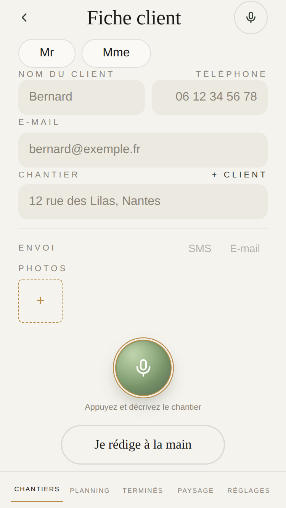
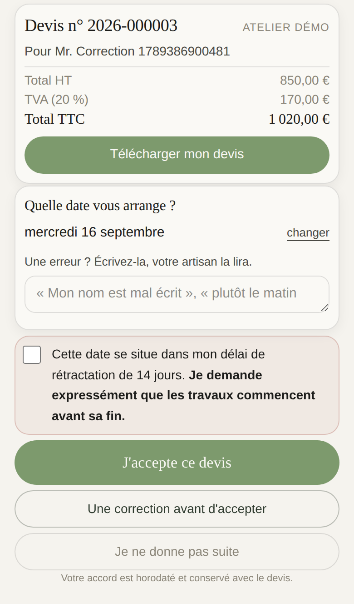

Ce que je changerais
Sur un petit iPhone, elle dépasse de 17 px : le bas se dérobe sous la barre. Voici l’écran tel qu’il est, et tel qu’il serait. Aucun mot retiré, aucune ligne déplacée.
Aujourd’hui 684 px pour 667
« Je rédige à la main » passe sous la barre du bas.
Resserré 667 px, tout tient
2 px de moins entre les blocs, 20 px de réserve en moins autour du micro.

Elle tient sur ce devis-ci. Elle dépasse de 2 px quand le nom du client est plus long, c’est le seul cas, mesuré dans la batterie. Le même geste la couvre : 2 px de moins entre les blocs.
Telle qu’il la reçoit 664 px
Au pire cas : la date choisie tombe dans les 14 jours.
